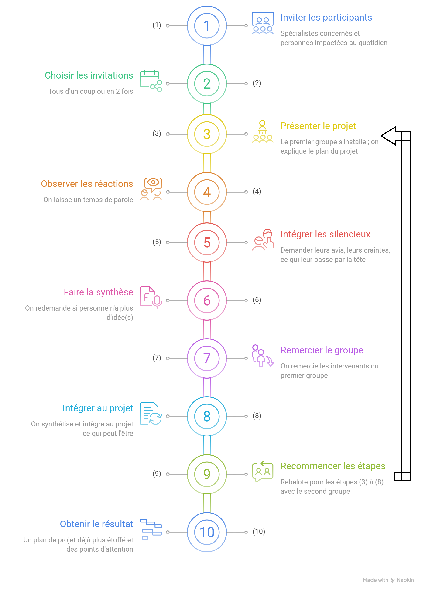

- But :
- Il 'sagit d'une manière de faire participer des acteurs à l'amélioration du projet, ce de manière récursive jusqu'à atteindre un objectif de raffinement du projet satisfaisant.
- Requiert :
- Quelques acteurs (au moins 2 pour qu'il y ait discussion) du projet que l'on estime aptes à critiquer le projet de manière positive (en proposant des alternatives ou améliorations ou tout du moins des pistes)
- Présentation :
-
Ce procédé peut s'illustrer grâce à ce schéma :

-
Le cycle est donc constitué de 3 étapes ;
(1) Informer sur les changements à venir.
(2) Vérifier si les changements sont compris de la même manière qu'imaginés, voir et comprendre les réactions que cela suscitent (à priori plutôt positif / négatif, possibles craintes, problèmes similaires qui remonteraient).
(3) Poser des questions pour continuer dans cette voie et développer l'idée initiale du changement grâce aux réactions et idées des intervenants.
Une fois le premier tour du cycle fini, on peut modifier l'idée de base et recommencer le processus ou bien finalement décider que le projet est désormais assez étoffé et clair et s'arrêter là.
L'idée c'est donc de dire à chaque fois, si on ajoute cela (les nouvelles idées / modifications) au changement, quel est votre ressenti, quelles sont vos craintes et que pourrait-on changer ? Les intervenants peuvent changer entre les cycles. - Use-Cases :
-
Tous projets de changement impliquant d'autres personnes.
Quelques exemples :
(1) Un changement d'application pour la gestion du dossier patient, où on aurait besoin de faire des cycles avec des infirmières, médecins et informaticiens qui s'occupperaient de la maintenance de cette appli.
(2) Un changement d'infrastructure réseau où on pourrait faire un ou plusieurs cycles avec les informaticiens qui s'occuppent de la distribution des flux et paquets et de la maintenance de cette infrastructure. Idéalement on préfèrera des spécialistes avec des spécialisations différentes (cybersécurité, connaissance réseaux pure, data).
- Exemple Concret : Reprenons ce dernier exemple (celui du changement d'infrastructure). Il est intéressant d'enregistrer la réunion ou que quelqu'un s'occuppe de faire le PV.
-
(1) On invite donc différents spécialistes concernés par ce changement, ainsi que des personnes impactées au quotidien par ce projet (par exemple dans ce cas des gestionnaires de programmes et de la distribution de ceux-ci).
(2) On peut décider de soit les inviter tous d'un coup ou en plusieures fois / dans notre cas disons en 2 fois pour favoriser la disponibilité des participants.
(3) On prépare donc une salle de réunion, le premier groupe s'installe, on informe sur le changement d'infrastructure en expliquant le plan du projet.
(4) On observe déjà la situation et les réactions dans la salle. On laisse un temps de parole pour que les intervenants puissent s'exprimer.
(5) Si certains sont silencieux, où que les intervenants ne réagissent pas trop d'eux-mêmes, il ne faut pas hésiter à essayer de les intégrer à la discussion en demandant leurs avis, leurs craintes, ce qui leur passe par la tête.
(6) Une fois les réponses recueillies, on fait la synthèse et on redemande si personne n'a plus d'idée(s) (on peut en ajouter si c'est le cas).
(7) On remercie les intervenants du premier groupe et les laisse partir.
(8) On synthétise et intègre au projet ce qui peut l'être (dépendant du scope voulu)
(9) Rebelote pour les étapes (3) à (8) mais avec le second groupe.
(10) On a comme résultat un plan de projet déjà plus étoffé et des points d'attention pour celui-ci. -

- Exercice(s) d'entraînement :
- Imaginez ou notez les étapes pour l'autre exemple de projet de changement et / ou pour un cas qui vous est propre.
- Autre(s) lien(s) :
- Lien 1 : vidéo explicative
- Source(s) :
- 1. Bareil Céline, Charbonneau Sylvie et Baron Aline (2020). Voyage au cœur d'une transformation organisationnelle : Récit et guide pas à pas - 2ème édition. Les Éditions JFD inc. (pp. 33-34).